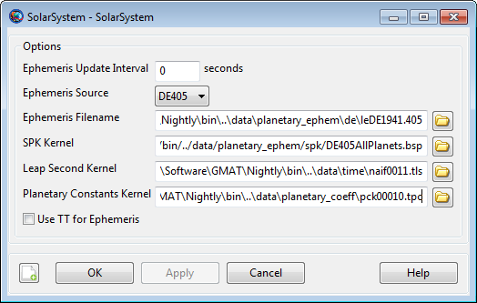

GMAT's event location subsystem is based on the NAIF SPICE library, which uses its own mechanism for configuration of the solar system. Instead of settings specified in GMAT via CelestialBody resources like Earth and Luna, SPICE uses "kernel" files that define similar parameters independently. This is discussed in detail in the ContactLocator and EclipseLocator references.
By default, GMAT offers general consistency between both configurations. But, it's useful to verify that the appropriate parameters are correct, and it's necessary for precise applications.
First, let's verify that the SolarSystem resource is configured properly for both configurations.
On the Resources tab, double-click the SolarSystem folder. This will display the SolarSystem configuration.
Scroll to the end of each input box to see the actual filenames being loaded.
You should see a configuration like this:
|  |
Note the following items:
Ephemeris Source: This is set to use the DE405 planetary ephemeris, the default in GMAT. If you switch to another ephemeris version, the fields below will update accordingly.
Ephemeris Filename: This is the DE-format ephemeris file used for propagation and parameter calculations in GMAT itself.
SPK Kernel: This is the SPICE SPK file used for planetary ephemeris for SPK propagation and for event location. Note that this is set consistent with Ephemeris Filename (both DE405)
Leap Second Kernel: This is the SPICE LSK file used to keep track of leap seconds in the UTC time system for the SPICE subsystem. This is kept consistent with GMAT's internal leap seconds file (tai-utc.dat) specified in the GMAT startup file.
Planetary Constants Kernel: This is the SPICE PCK file used for default configuration for all the default celestial bodies. This file contains planetary shape and orientation information, similar to but independent from the settings in GMAT's CelestialBody resources (Earth, Luna, etc.).
These are already configured correctly, so we don't need to make any changes.
Next, let's configure the Earth model for precise usage with the ContactLocator resource. By default, the Earth size and shape differ by less than 1 m in equatorial and polar radii between the two subsystems But we can make them match exactly by modifying GMAT's Earth properties.
On the Resources tab, expand the SolarSystem folder.
Double-click Earth to display the Earth configuration.
Note the various configuration options available:
Equatorial Radius and Flattening define the Earth shape for GMAT itself. PCK Files lists additional SPICE PCK files to load, in addition to the file shown above in the SolarSystem Planetary Constants Kernel box. In this case, these files provide high-fidelity Earth orientation parameters (EOP) data.
On the Orientation tab, Spice Frame Id indicates the Earth-fixed frame to use for the SPICE subsystem, and FK Files provides additional FK files that define the frame. In this case, Earth is using the built-in ITRF93 frame, which is different but very close to GMAT's EarthFixed coordinate system. See the CoordinateSystem reference for details on that system.
Set Equatorial Radius to
6378.1366.Set Flattening to
0.00335281310845547.Click .
These two values were taken from the pck00010.tpc file referenced in the SolarSystem configuration. Setting them for Earth ensures that the position of the GroundStation we create later will be referenced to the exact same Earth definition throughout the mission. Note that the exact position may still differ between the two based on the different body-fixed frame definition and the different EOP data sources, but this residual difference is small.
Your Earth panel should look like this after these steps are complete:
 |